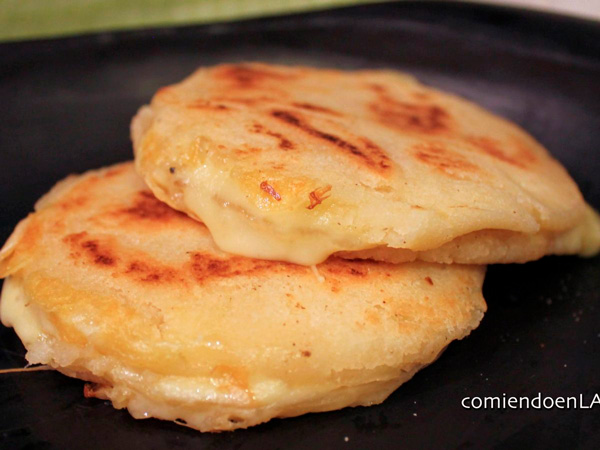

Arepas
Go to Arepas Recipe
Author: Javier Romero
The first reference to this product was made in 1539, it is evidence that its origin was from the natives of the new world since in the writings of the time there were descriptions on a thick cake called arepas. Today this food is very common in Venezuela and Colombia being a shared heritage of our ancestors, adapted to the local tastes of each. In Colombia each region has its own way of preparing arepas, grilled, roasted, fried or baked. May be sweet or salty, stuffed or unfilled.
Time: 45 minutes - Difficulty: Easy - 219Kal
Ingredients
- 225 g pre-cooked white maize flour
- 360 ml of wate
- 40 g of butter
- 150 g grated mozzarella cheese
- 1 teaspoon of salt
- Olive Oil
Steps
-
Mix the water with the flour
We begin by putting in a large bowl the warm water. Then we add the flour gradually while we mix. As we put the flour, it will be made into a dough.
-
Add salt and butter
Once we have mixed all the flour, add the salt, integrate it, and then melted butter.
-
Add the cheese
After adding the butter to the dough, add the grated mozzarella cheese and mix it with the rest of the dough. Then I recommend taking it to a flat surface and continue kneading it about 5 minutes more. If you see that it sticks to the hands in excess, you have to put a little more flour until this does not happen.
-
Start shaping the arepas
With the dough ready, it’s time to shape the arepas. We take a dumpling and crush it into a disc shape. Then we gather the formed cracks on edges.
-
Cook the arepas
When we have several arepas formed, we put a frying pan to the fire with a splash of olive oil well extended by the bottom. When it is hot, place the arepas and start cooking.
-
Grill the arepas
We wait for the arepas to brown on both sides. This is going to take a few minutes, at least 7 on each side.